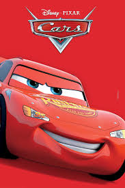
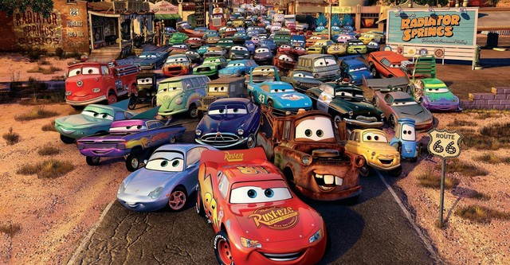
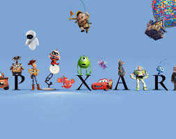
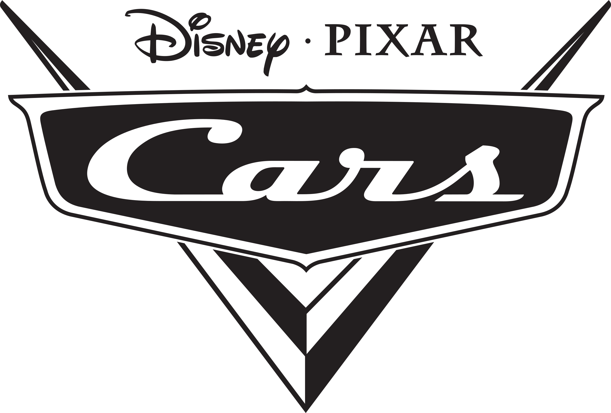
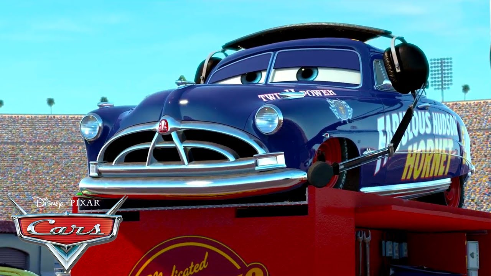

UN PEDACITO DE MI INFANCIA EN UNA PELICULA DE CARROS ''CARS'' |
| QUE ES CARS? | La trama principal sigue a Rayo McQueen, un ambicioso y veloz coche de carreras de la Copa Pistón que vive para ganar. En un viaje a California para la carrera final de la Copa Pistón, se pierde y termina accidentalmente en el pequeño y olvidado pueblo de Radiator Springs, en la Ruta 66.Allí, Rayo se ve obligado a convivir con los peculiares habitantes del pueblo, como la grúa oxidada Mate, la abogada Sally Carrera y el sabio Doc Hudson, un legendario coche de carreras retirado. A través de sus experiencias en Radiator Springs, Rayo McQueen aprende valiosas lecciones sobre la amistad, el amor, la importancia de las relaciones humanas (o "automovilísticas") y que la vida es más que solo ganar carreras. |
 |
| PORQUE ES LA INFANCIA DE MUCHA GENTE? | Cars marcó la infancia de mucha gente porque sus personajes (coches con personalidad propia) eran adorables y fáciles de querer. La historia, llena de amistad, lecciones de vida y humor, transcurría en un mundo fascinante donde los autos viven y sienten. Además, la excelente animación de Pixar y la enorme cantidad de juguetes hicieron que el universo de Cars trascendiera la pantalla, acompañando a los niños en su día a día. |  |
QUE ESTUDIO DE ANIMACION REALIZO ESTA PELICULA? |
"Cars" fue realizada por Pixar Animation Studios y distribuida por Walt Disney Pictures. La idea surgió principalmente de John Lasseter, director de la película. Él, siendo un gran aficionado a los coches, se inspiró durante un viaje familiar por la histórica Ruta 66. Durante este recorrido, Lasseter notó cómo muchos pequeños pueblos habían sido olvidados por la construcción de las autopistas, lo que lo llevó a reflexionar sobre la importancia de la comunidad. Así, combinando su pasión por los automóviles con la observación de estas comunidades, concibió un mundo donde los vehículos son los personajes y exploró temas como la amistad y el valor de lo simple frente a la prisa. |  |
| PORQUE ME GUSTA MUCHO CARS? | A mí me gustó mucho la película de Cars porque, aunque al principio parece que solo se trata de autos corriendo, en realidad tiene una historia muy bonita y con muchos valores. Me gustó ver cómo Rayo McQueen cambia a lo largo de la película. Al principio era un coche creído, que solo pensaba en ganar carreras y en ser famoso. Pero cuando llega por accidente a Radiador Springs, todo empieza a cambiar. Me gustó ver cómo, poco a poco, Rayo empieza a valorar cosas más importantes como la amistad, la humildad y el ayudar a los demás. Me hizo pensar que en la vida no todo es competir o ser el mejor, sino saber quiénes están a tu lado y cómo tratas a los demás.También me encantaron los personajes. Mate me hizo reír mucho, y Doc Hudson me enseñó que todos tienen una historia y algo que enseñar. Sally también fue un personaje muy bonito, que ayudó a Rayo a ver la vida de otra manera. Las carreras, los paisajes y la animación me parecieron increíbles, pero lo que más me gustó fue el mensaje que deja la película: que a veces hay que frenar un poco, mirar alrededor y darse cuenta de lo que realmente importa. Por todo eso, Cars se convirtió en una de mis películas favoritas, y Rayo McQueen en uno de mis personajes más admirados. |
 |
| MI PERSONAJE FAVORITO ES DON HUDSON HURNET | por su increíble transformación de un ermitaño gruñón a un sabio mentor. Me encanta cómo, a pesar de su pasado doloroso, vuelve a encontrar su chispa a través de Rayo McQueen, enseñándole lecciones cruciales no solo sobre las carreras, sino también sobre la vida y la verdadera amistad. Su sabiduría tranquila y su redención personal son simplemente cautivadoras. |  |
| QUE LECCION ME DEJO ESTA PELICULA | Después de ver la película Cars, me quedé pensando mucho en todo lo que enseña. Para mí, no solo fue una historia divertida de autos y carreras, sino una lección de vida muy valiosa. Lo que más me dejó fue entender que el éxito no lo es todo, y que la fama no vale más que una verdadera mistad o una buena acción. Al principio, Rayo McQueen solo quería ganar, ser el mejor y que todos lo reconocieran. Pero cuando se queda atrapado en ese pequeño pueblo llamado Radiador Springs, se da cuenta de que hay cosas mucho más importantes que la velocidad o los trofeos. Ahí aprende lo que es tener amigos de verdad, tomarse el tiempo para disfrutar la vida y valorar a las personas por lo que son, no por lo que tienen. Lo que más me impactó fue cuando Rayo, en la última carrera, decide frenar y ayudar a otro corredor en vez de aprovechar el momento para ganar. Esa escena me enseñó que a veces el verdadero triunfo está en hacer lo correcto, no en cruzar la meta primero. |
| QUE LECCION PRETENDE DEJAR ESTA PELICULA SEGUN PIXAR? | Según Pixar, "Cars" busca dejar la lección de que la vida y la verdadera felicidad no se encuentran en la fama o la victoria individual, sino en las relaciones, la comunidad y el redescubrimiento de valores simples. La película nos enseña que desacelerar, apreciar a quienes nos rodean y valorar el lugar al que pertenecemos es mucho más importante que la prisa por alcanzar el éxito material o la gloria personal. Es un recordatorio de que la verdadera riqueza está en la conexión humana (o "automovilística") y en la humildad. |